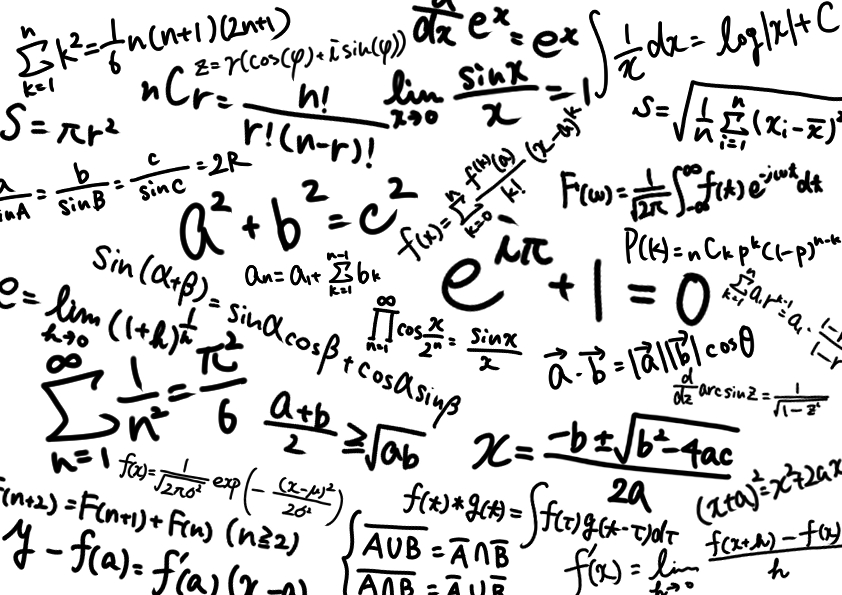
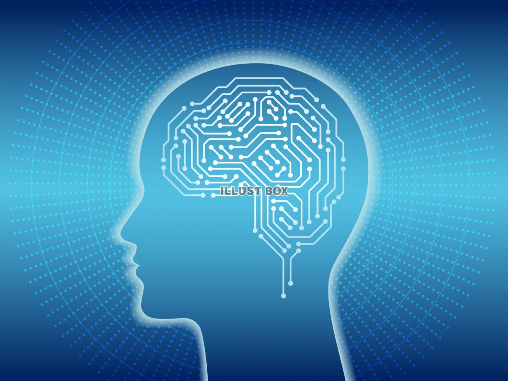

ここでは人工知能(以下AI)がどの様に進化してきたのかについて紹介したい。
AIの歴史
チャプター1…AIの始まり
人類が人工知能を作り始めたのは実は1960年代からである。 そのきっかけとなったのがイギリスのアラン･チューリングが提唱した｢機械は考えることが出来るか｣という問いである。 この問いを解決すべく、多くの科学者が人間のように考えることができる機械を開発するようになった。 これにより人類初のAIが誕生した。
初期に開発されたAIは強い枠組みが存在するものに対して大きな効果を発揮することが開発を進めていく中で分かってきた。 しかし、当時のAIでは複雑な社会の問題に対して太刀打ちできないことも徐々に判明していった。 そのため、開発者が段々と減少していきAIの開発は落ち着いてしまった。
チャプター2 … 1回目の進化
1980年代、専門家の知識をAIに教え込むことで、AIが専門家のように課題を解決しようとするエキスパートシステムによってAIに最初の転換期が起こった。 しかし、当時は人間が手動で知識をコンピュータに入力する必要があり実装までに時間がかかり過ぎる、例外処理に対応できないといった弱点があったため、ブームは再び衰退いていく。
とはいえこの時期には音声認識やデータマイニングなどの今なお使われている技術が開発されているのでこの時期に登場したAIの凄さも理解しておくべきだろう。
チャプター3 … 二回目の進化と現在

2000年代にディープラーニングが提唱されたことによってAIの2度目の転換期が起こった。 前回と違ってAI自身が知識を獲得できるようになり、さらにビッグデータと呼ばれる従来とは比べ物にならないほど膨大なデータ群を用いることでAIに出来ることが増えてきた。
今では昔以上にデータが場所を問わず収集できるため、今もなおAIは進化を続けている。
参考文献
- Ledge.ai「AI(人工知能)の歴史―時系列で簡単解説」(2020、6月17日)https://ledge.ai/history-of-ai/
- 総務省「平成28年版 情報通信白書人工知能（AI）研究の歴史」(2016年) https://www.soumu.go.jp/johotsusintokei/whitepaper/ja/h28/html/nc142120.html